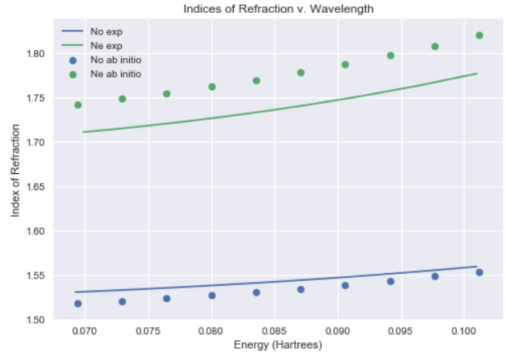
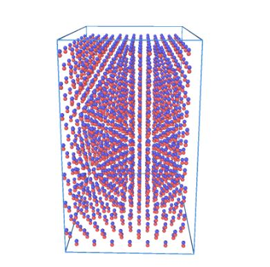

Project Assistant at Laboratory for Laser Energetics
- Performed computational chemistry simulations on liquid crystals
- Self taught density functional theory software and implemented it to calculate
molecular polarizability of liquid crystal compounds
- Developed a script to analyze output files and calculate birefringence from raw DFT data
- Analyzed the trends of birefringence based off wavelength of light and governing equation
Lab Assistant at University of Rochester
- Assisted in a computational materials science lab
- Worked with molecular dynamics software LAMMPS
- Wrote simulations on mechanical properties of cryogenically frozen hydrogen
- Tested potentials used to estimate forces in an atomistic simulation
